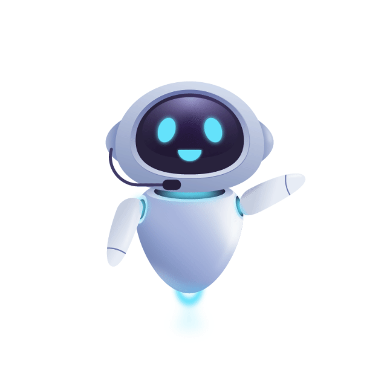
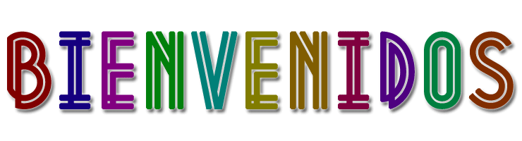
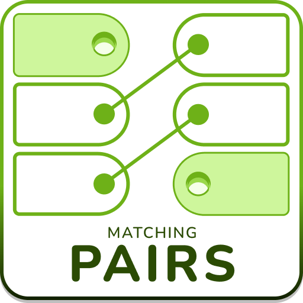
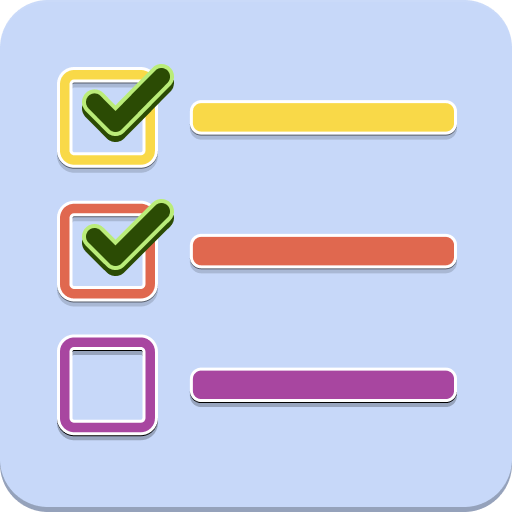

En este espacio repasaremos de manera didáctica y divertida los principales temas relacionados a la Computación e Informática gracias a juegos gratuitos de gamificación que proporciona la plataforma Educaplay.

